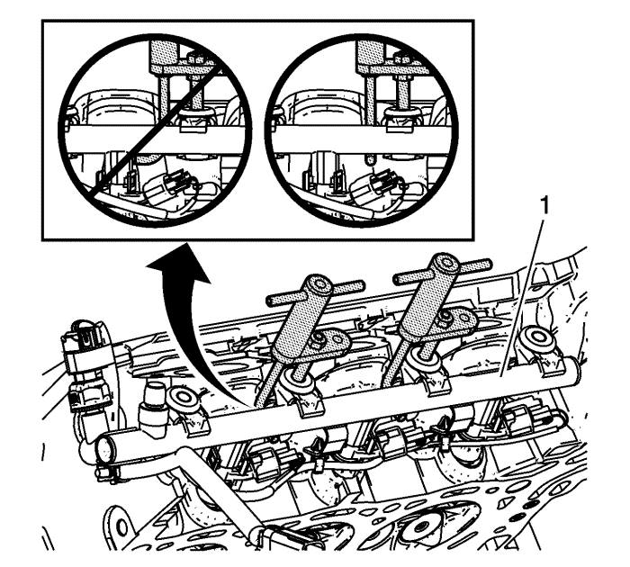

Sustitución del inyector de combustible y el distribuidor de combustible
Herramientas especiales
EN-47909 Juego de limpieza de casquillos e interior de inyectores de combustible
Si desea informarse sobre herramientas regionales equivalentes, consultar Herramientas especiales .
Procedimiento de desmontaje
- Despresurice el sistema de combustible. Consultar Descarga de la presión del combustible .
- Desmonte el protector del tubo de combustible. Consultar Sustitución del protector de la bomba de combustible : LF1 .
- Desmonte el colector de admisión. Consultar Sustitución del colector de admisión .
- Desmonte la tubería intermedia de alimentación de combustible. Consultar Sustitución de la tubería intermedia de alimentación de combustible : LF1 .
- Retire el aislante de espuma de los tubos de distribución del combustible.
- Retire la culata. Consulte Sustitución de la culata - lado izquierdo o Sustitución de la culata - lado derecho .

- Quite los tornillos (1) del tubo de distribución de combustible de la bancada 2.
- Quite el tubo de distribución del combustible y los inyectores (1) de la bancada 1, en conjunto. Consultar Desmontaje de la culata : LF1 o LFW .
- Desemborne las conexiones eléctricas del inyector de combustible de la bancada 1.

- Si el tubo de distribución del combustible o los inyectores de la bancada 2 están siendo mantenidos, quítelos. Consultar Desmontaje de la culata : LF1 o LFW .
- Desconecte el inyector de combustible y las conexiones eléctricas del sensor de presión de combustible de la bancada 2.
Nota: Los inyectores directos de combustible deben reacondicionarse cada vez que el inyector se suelte del tubo de distribución de combustible o de la culata.
- Es necesario reconstruir los inyectores de combustible. Consultar Limpieza e inspección de los inyectores y del tubo de distribución de combustible : LF1 o LFW .
Procedimiento de montaje
- Limpie los orificios del inyector de combustible utilizando el kit En-47909.
- Asegúrese de que los inyectores de combustible se han montado y lubricado correctamente. Consultar Limpieza e inspección de los inyectores y del tubo de distribución de combustible : LF1 o LFW .
- Conecte el inyector de combustible y las conexiones eléctricas del sensor de presión de combustible de la bancada 2.
- Coloque el tubo de distribución de combustible del banco 2 y apriete uniformemente a mano los 2 pernos del tubo de distribución de combustible exterior para que los inyectores se asienten en los orificios de los inyectores. Retire los pernos.
- Conecte las conexiones eléctricas del inyector de combustible de la bancada 1.
- Coloque el tubo de distribución de combustible del banco 1 y apriete uniformemente a mano los 2 pernos del tubo de distribución de combustible exterior para que los inyectores se asienten en los orificios de los inyectores.
- Apriete con la mano los demás tornillos del tubo de distribución del combustible.
Precaución: Consulte Precaución con las fijaciones en la sección Prólogo
- Apriete los pernos de los tubos de distribución de combustible de los bancos 1 y 2.
| • | Apriete los pernos del tubo de distribución de combustible interior a 10 N·m (89 lb. pulg.). |
| • | Apriete los pernos del tubo de distribución de combustible exterior a 10 N·m (89 lb. pulg.). |
- Sustituya cualquier cinta de unión de mazo de cables con cortes de los tubos de distribución de combustible.
- Monte la culata. Consulte Sustitución de la culata - lado izquierdo o Sustitución de la culata - lado derecho .
- Monte la tubería intermedia de alimentación de combustible. Consultar Sustitución de la tubería intermedia de alimentación de combustible : LF1 .
- Compruebe si existen pérdidas de combustible con el procedimiento siguiente:
| 12.1. | Conecte el encendido, con el motor desconectado durante 2 segundos. |
| 12.2. | Desconecte el encendido durante 10 segundos. |
| 12.3. | Ponga en marcha el encendido con el motor apagado. |
| 12.4. | Compruebe si existen pérdidas de combustible. |
Nota: Antes de montar el aislante de espuma, extraiga cualquier combustible que permanezca en el hueco del inyector.
- Monte el aislante de espuma en los tubos de distribución del combustible.
- Monte el colector de admisión. Consultar Sustitución del colector de admisión .
- Monte el protector del tubo de combustible. Consultar Sustitución del protector de la bomba de combustible : LF1 .
- Monte la tapa de la boca de servicio de presión de combustible del lado de baja presión.
| © Copyright Chevrolet Europe. All rights reserved |